地政学
ポートルイスはインド洋南西部の島国首都で、港、国会、最高裁、中央銀行が近いです。アフリカ、インド、欧州、湾岸、アジアを結ぶ海上交通の中継点として、島の小ささ以上の外交的意味を持つ都市です。国家を映す港でもあります。
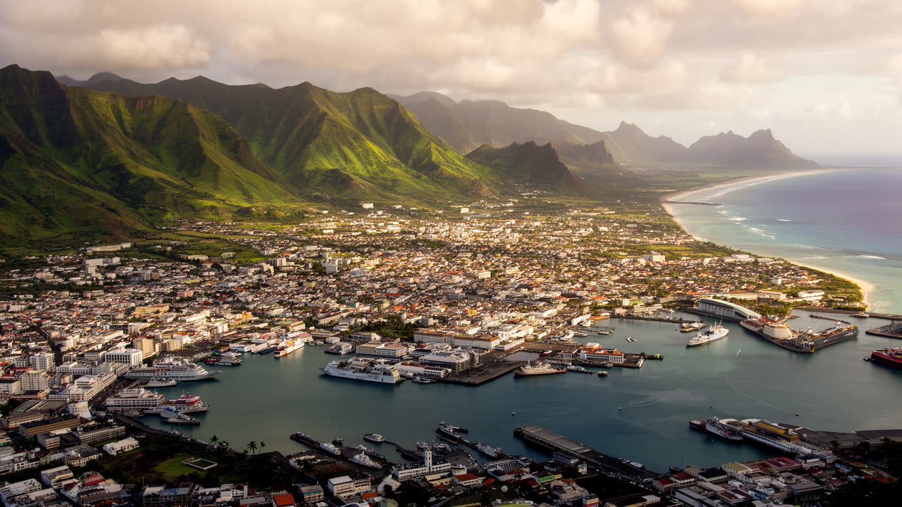
🇲🇺 モーリシャス / アフリカ / World City Atlas
インド洋の航路、国会と官庁、港湾と金融、中央市場、移民の記憶、ヒンドゥー寺院、モスク、教会、中国系商店街が一つの湾に集まるモーリシャスの首都です。
都市の骨格
ポートルイスは港と官庁街が近い小さな首都であり、日中は島中から通勤者が集まります。市場、金融街、宗教施設、競馬場、住宅地区が急な山裾と海の間で密に並びます。
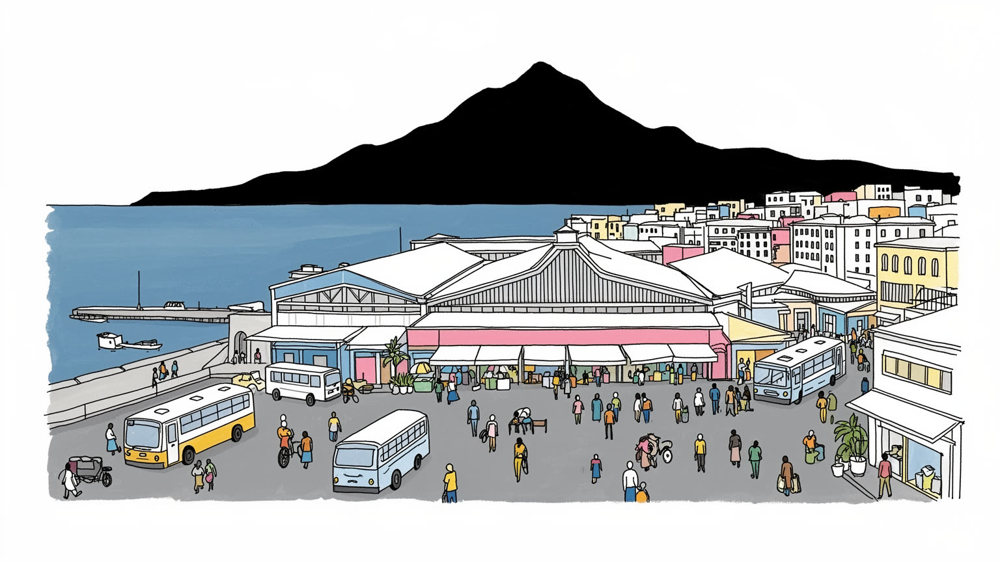
ポートルイスはインド洋南西部の島国首都で、港、国会、最高裁、中央銀行が近いです。アフリカ、インド、欧州、湾岸、アジアを結ぶ海上交通の中継点として、島の小ささ以上の外交的意味を持つ都市です。国家を映す港でもあります。
港湾、通関、金融、保険、行政、観光、繊維、飲食が雇用を作ります。朝は島内各地から通勤者が入り、夕方に郊外へ戻ります。市場の商人、港の作業員、銀行員、公務員が同じ狭い中心部を使う街です。賃金差も今も見える街です。
ヒンドゥー寺院、モスク、教会、中国系商店、クレオール文化が近接します。奴隷制と年季奉公移民の記憶、セガ音楽、競馬、祭礼、路上の食が混ざり、宗教は生活の暦として街に残る都市です。祈りも暮らしの日常の一部です。
中央市場、カダン水辺、砦、チャイナタウン、アープラヴァシ・ガートを歩く観光の横で、住民は渋滞、暑さ、住宅、治安、洪水、物価に向き合います。名所と通勤の日常が近い港町です。午後の暑さも日々の課題です。
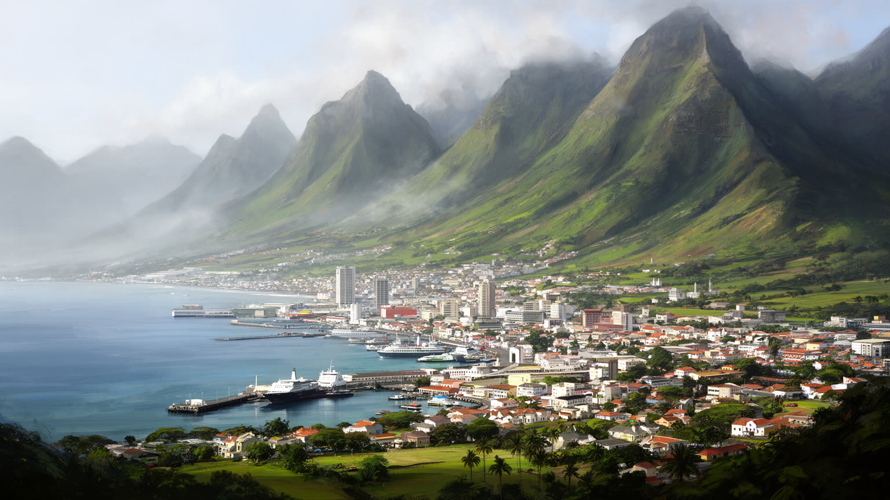
ポートルイスの地形は、開いた海辺のリゾートではなく、山に背を預けた港湾都市として読む必要があります。湾はインド洋航路の避難と補給に向き、背後のモカ山地やル・プース周辺の稜線は、市街地の広がりを強く制限します。中心部は海、港湾施設、官庁、商店街、道路が短い距離に詰まり、少し歩くと坂道の住宅地や谷筋へ変わります。島全体が小さいため、首都の通勤圏は市域を越えて広がり、朝夕にはキュールピップ、ローズヒル、カトルボルヌ、北部の村から人が流れ込みます。地形の狭さは都市の密度を生む一方、渋滞、洪水、暑さ、土地価格、港湾と住宅の近さを課題にします。港に近い便利さは、貨物車や倉庫、保税施設、騒音の近さでもあります。山と海に挟まれた街路を歩くと、国家の中心が意外なほど小さな盆地に集まっていることが分かります。坂の上の住宅からは港が見え、港からは山の雲行きが見えるため、気象と交通と労働が同じ視界に入ります。平地が限られることは、学校、墓地、寺院、倉庫、住宅、道路の競合を日常化し、都市更新の余地も狭めます。だからポートルイスの都市計画は、拡大よりも限られた土地の配分、斜面の安全、海辺の公共性をどう保つかにかかります。雨の日の排水管理も重要になります。ポートルイスの力は規模より位置にあり、島国の外への窓と、島内の行政の結節が同じ湾岸で重なっています。
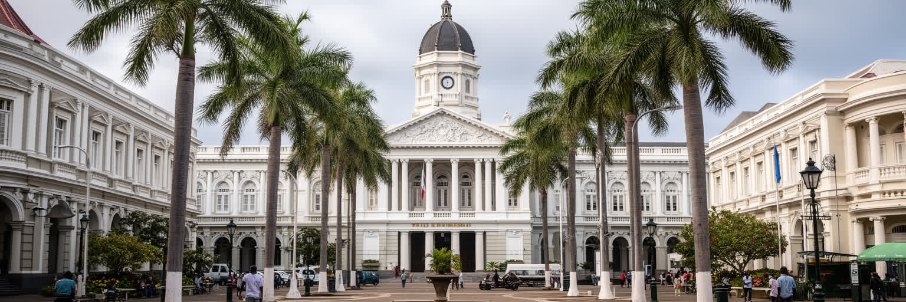
ポートルイスはモーリシャスの行政首都であり、国会、最高裁、中央銀行、主要省庁、港湾当局が近い距離に並びます。都市の政治性は巨大な官庁街としてではなく、古い植民地都市の街路、市場、金融街、港湾の間に制度が入り込む形で現れます。小さな島国では、政府の決定、港の運営、観光政策、社会保障、土地利用、宗教的休日、外交関係が生活に届くまでの距離が短いです。選挙や議会、労働争議、裁判、抗議行動は、狭い中心部の交通や商売にも影響します。多民族国家をまとめる制度は、言語、宗教、教育、土地、労働の調整なしには成り立たありません。ポートルイスでは、独立国家の主権と植民地時代の建物、英仏の法制度、インド系やクレオール系住民の政治参加が重なって見えます。官庁や裁判所の近くで商人が店を開き、港では国際貨物が動き、市場では生活費の感覚が政治への不満になります。市役所や中央政府の窓口は、許認可、社会給付、土地利用、衛生、交通を扱い、市民が国家を最も身近に感じる場所にもなります。報道機関や労働団体も近いため、島内の争点は首都の路上で可視化されやすいです。政治の中心が小さいことは、説明責任を近づけるが、権力や利害の近さも生みます。日々の信頼も問われます。首都を見ることは、制度が抽象語ではなく、混雑する街路や窓口の待ち時間として現れる場面を見ることでもあります。
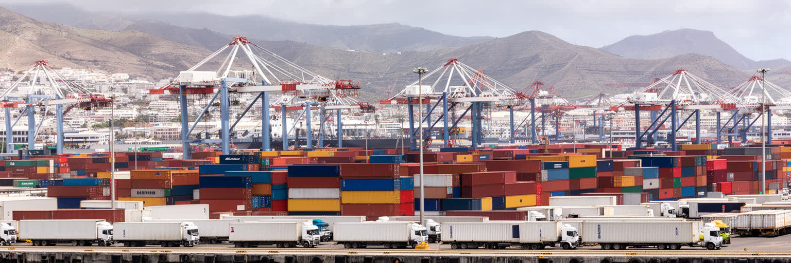
ポートルイス港は、観光客が眺める水辺である前に、島の生活を支える輸入と輸出の装置です。モーリシャスは多くの燃料、食料、機械、建材、消費財を外部に頼り、港の通関、倉庫、コンテナ、冷蔵物流、道路接続が止まれば、店頭価格や建設、医療、観光の運営まで影響を受けます。砂糖や繊維で成長した時代から、現在は再輸出、船舶補給、金融、観光、サービス産業へ重心が移ったが、海に開いた港の重要性は変わりません。港湾労働は天候、国際運賃、燃料価格、通関手続きに左右され、島国の経済が遠い市場と常に結ばれていることを示します。クルーズ船やカダンの水辺開発は華やかな顔を作る一方、貨物車、騒音、排気、保安区域は住民の生活と緊張します。港が中心部に近いことは、雇用と都市の活気をもたらすが、防災、交通、安全、景観の調整も難しくします。港の効率化は国際競争力を高めるが、労働者の技能更新や安全、夜間作業、家族生活への影響も考えなければなりません。輸入価格が上がれば市場の食材や建材費に跳ね返り、港の問題は台所の問題になります。さらに保安や税関の強化は、密輸対策だけでなく、合法的な小口商いの速度にも影響します。島の備えも常に問われます。ポートルイスを読むには、海辺の写真だけでなく、倉庫の裏側、早朝の貨物、通関業者、港で働く人の時間を見る必要があります。
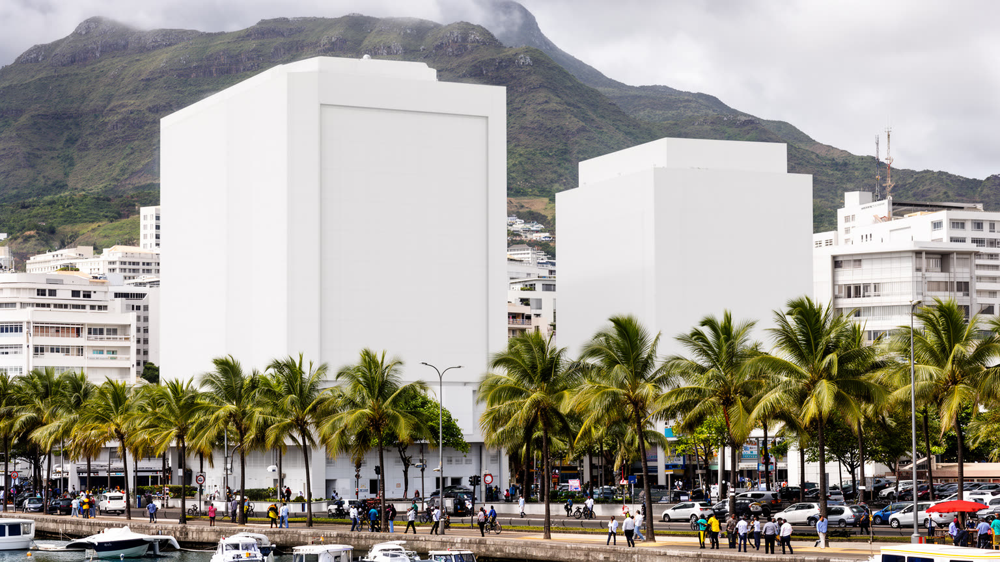
ポートルイスは、港湾都市であると同時にモーリシャスの金融中枢でもあります。銀行、保険、証券、ファンド管理、法律、会計、国際事業会社の事務が集まり、島国の経済を観光と砂糖だけでは説明できないものにしています。モーリシャスはアフリカ、インド、欧州を結ぶ投資の経由地として制度を整え、英語とフランス語、安定した法制度、時差、租税条約、人材を競争力として使ってきました。ですが金融の成功は、透明性、税制、公平性、国際監視という問いも伴います。オフィスで動く資金は目に見えにくいが、賃料、専門職の給与、教育需要、飲食、交通、住宅市場には影響します。金融街の近くでは、港湾労働者、市場の商人、清掃員、警備員、公務員も同じ都市空間を使うため、高収入の専門職と日常サービスの距離が近いです。金融が国家収入を支えるほど、外部規制や世界市場の変化に弱くもなります。大学や専門教育は会計、法務、情報技術の人材を送り出すが、若者全員がその仕事へ届くわけではありません。中心部のオフィス需要は飲食店や交通を支える一方、土地価格を押し上げ、小商いの余地を狭めることもあります。金融の信頼は、法の安定だけでなく、汚職を抑え、国際的な疑念に応える透明な実務にも支えられます。ポートルイスの金融を読むことは、ガラス張りのビルだけでなく、小国が世界経済で場所を作る戦略と、その利益がどの層へ届くのかを問うことです。
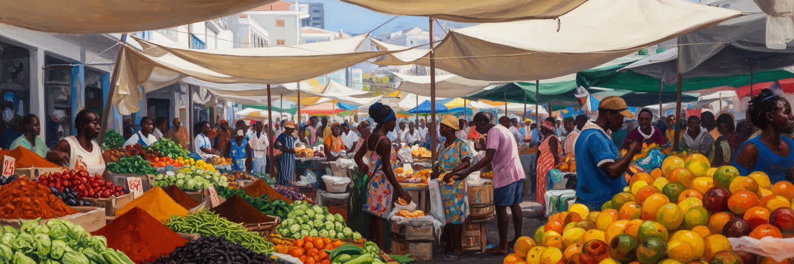
中央市場は、ポートルイスの多文化性を最も具体的に感じられる場所です。野菜、香辛料、果物、魚、衣料、民芸品、屋台の軽食が並び、ヒンドゥー、ムスリム、クレオール、中国系、フランス系の食習慣が一つの通路で交わります。ダールプリ、ブリヤニ、麺、カレー、唐辛子、甘い飲み物は、観光の味である前に通勤者や商人の昼食であり、値段の変化は家計の感覚に直結します。市場では複数の言語が飛び交い、値段交渉、仕入れ、家族経営、路上販売、観光客向けの土産物が混ざります。食文化は美しい多様性として語られやすいが、実際には早朝の仕入れ、冷蔵、衛生、家賃、許認可、交通、低賃金労働によって支えられています。市場がにぎわう一方、若者の雇用、物価上昇、輸入食材への依存、食品廃棄も課題になります。屋台の味は家庭料理と外食をつなぎ、宗教ごとの食の規範や祭礼の季節感も映します。観光客向けの通路と住民向けの買い物は近いが、価格や品ぞろえがずれることもあります。衛生管理や建物の老朽化を改善しながら、過度に整えすぎて市場の安い食と小商いを失わないバランスも大切です。ポートルイスの市場を歩くことは、島の歴史が料理の形で残り、日々の生活費が政治と結びつく現場を見ることです。観光客が写真を撮る色彩の奥には、家族を養うための細かな商いと、島の外から届く物資の流れがあります。
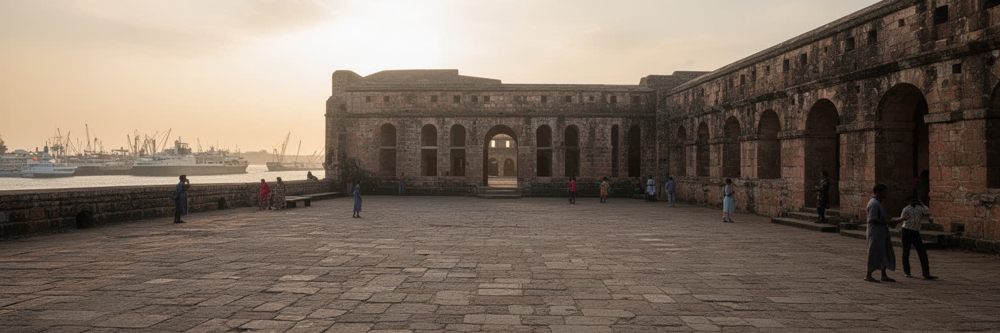
ポートルイスの世界史的な重みは、港の近くに残るアープラヴァシ・ガートに凝縮されます。奴隷制廃止後、インドなどから年季奉公労働者がモーリシャスへ渡り、サトウキビ農園と植民地経済を支えました。入国施設の遺構は、自由労働という言葉の裏にあった契約、移動、監督、家族分離、言語の断絶を考えさせる場所です。ポートルイスは単に移民が集まった街ではなく、人の移動を制度として受け入れ、分類し、農園へ送り出した港でした。この記憶は、現在のインド系多数社会、宗教暦、食文化、政治、土地所有の問題ともつながります。奴隷制の記憶やクレオール共同体の歴史と並べて見ると、モーリシャスの多文化性は平和な混合だけでなく、強制、労働、抵抗、適応の積み重ねであることが分かります。遺産観光は石造りの遺構を眺めるだけでは足りません。学校教育や記念行事で語られる歴史は、家族の姓、言語、宗教、土地への感覚にも残ります。港の近くに遺産があることは、到着と出発の痛みを都市の中心へ置き直す意味を持ちます。記憶を扱う施設は、観光収入だけでなく、子どもたちが自分の国の成り立ちを学ぶ公共の教室でもあります。誰が労働を担い、誰が土地を得て、誰の記憶が公的に語られ、誰の痛みが見えにくいのかを問う必要があります。ポートルイスの港は、商品だけでなく人の移動の歴史も受け止めてきました。
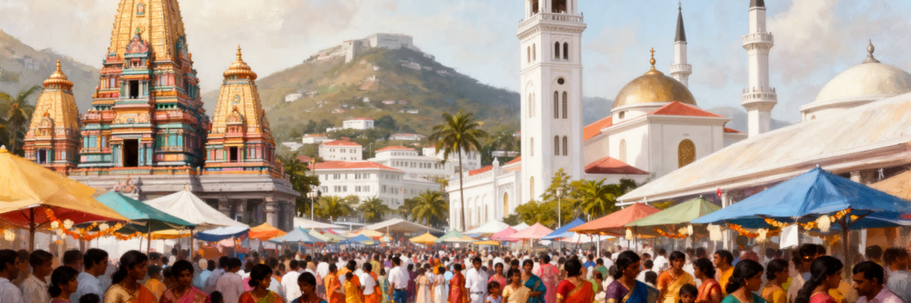
ポートルイスの宗教生活は、ヒンドゥー寺院、モスク、カトリック教会、英国国教会、中国系の信仰施設が近い距離に並ぶことから始まります。宗教は観光的な多彩さではなく、家庭、学校、商店、休日、食、葬送、結婚、慈善、政治の言葉に関わる日常の制度です。ディーワーリー、イード、クリスマス、春節、巡礼や寺院祭礼は、街の交通、商売、音、匂い、服装を変えます。多宗教の共存はモーリシャスの誇りですが、調整が不要という意味ではありません。礼拝の音、祭りの交通規制、墓地、学校行事、食の規範、宗教団体の影響力は、住民間の交渉によって保たれます。港町で働く人々は、出身、言語、信仰が異なっても同じ市場やバス停を使い、祝祭の時には互いの暦を意識します。セガ音楽や競馬のような世俗の楽しみも、宗教的な休日や家族の集まりと重なりながら都市のリズムを作ります。宗教施設は、災害時の支援、貧困世帯への食料、葬儀、教育相談の拠点にもなり、行政だけでは届きにくい関係を補います。信仰が異なる人同士が近くで暮らすからこそ、寛容は理念ではなく日々の手続きになります。祝祭の時期には、店の営業時間、交通、家庭の支出、学校の予定が変わり、宗教が都市の時間割を作ることも見えてきます。ポートルイスを読むには、寺院の色彩やモスクの形だけでなく、祈りが労働時間、食事、近所付き合い、公共空間の使い方をどう調整しているかを見る必要があります。
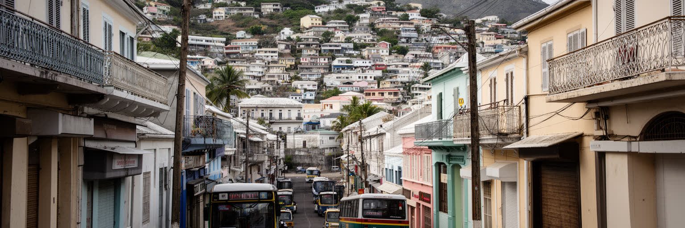
ポートルイスの暮らしは、昼のにぎわいと夜の静けさの差が大きいです。中心部には官庁、銀行、港、市場、商店が集まり、日中は通勤者と買い物客で混雑するが、夕方になると多くの人が島内の住宅地へ戻ります。市内に住む人にとっては、中心への近さが仕事や学校、医療、商売の利点になる一方、交通、暑さ、古い住宅、排水、治安、土地の狭さが負担になります。山裾の地区では坂道や谷筋が生活動線を決め、低地では大雨時の浸水が心配になります。住宅問題は単なる戸数ではなく、家族の世代構成、移動手段、職場までの距離、学校、宗教施設、近所の支えと結びつきます。観光地としての水辺開発や金融街の更新は、都市の顔を整えるが、家賃や土地利用の圧力を高めることもあります。小さな店、屋台、バス停、学校前の送り迎えは、首都の制度や港湾の大きな物語とは別の速度で都市を動かします。若者にとっては、首都に近いことが職探しの機会を増やす一方、安定した雇用と住宅費のバランスは簡単ではありません。高齢者や子どもには、日陰、歩道、医療、近所の目が安全に直結します。島内交通が首都へ集まるほど、時間の負担は郊外の家庭に移り、朝夕の移動は生活の質を左右します。ポートルイスの生活を評価するには、国会や市場だけでなく、暑い午後に歩ける日陰、雨の後の排水、夜道の安心、若者が働き始められる場所を見る必要があります。
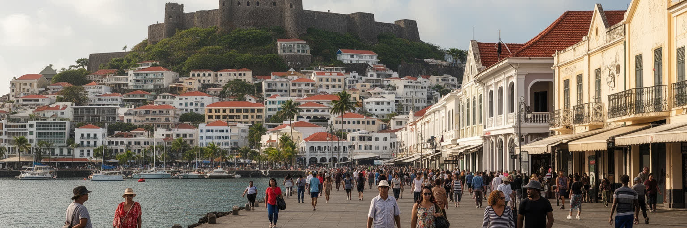
ポートルイス観光は、中央市場、カダン・ウォーターフロント、ブルーペニー博物館、チャイナタウン、ジュマ・モスク、聖ルイ大聖堂、アデレード砦、シャン・ド・マルス競馬場、アープラヴァシ・ガートを短い距離でつなげられます。海辺の整えられた商業空間と、古い市場や宗教施設の生活感が近いことが魅力です。ですが観光は首都の一面にすぎありません。クルーズ船やリゾート滞在者が数時間だけ訪れる街では、写真に残る色彩と、通勤者の混雑、暑さ、物価、路上販売の規制、清掃、警備の負担が同時に起きります。競馬場は英国植民地以来の娯楽と階層文化を映し、砦からの眺めは美しい一方、都市が山と港に挟まれている制約も示します。観光収入は雇用を作りますが、中心部が来訪者向けに偏りすぎれば、住民の普段使いは弱くなります。博物館や遺産施設では、奴隷制や年季奉公移民の記憶を消費的な短時間観光にしない姿勢も問われます。市場では撮影よりも買い物の流れを尊重することが、働く人への最低限の礼儀になります。短い滞在でも、徒歩の暑さ、歩道の狭さ、交通量を体感すると、首都の課題が観光体験そのものに現れます。ポートルイスを歩くなら、名所だけを点で巡るのではなく、市場で働く人、寺院へ向かう家族、港へ入る貨物車、昼食を急ぐ公務員の動線を見ると、観光都市ではなく生活する首都としての厚みが見えてきます。
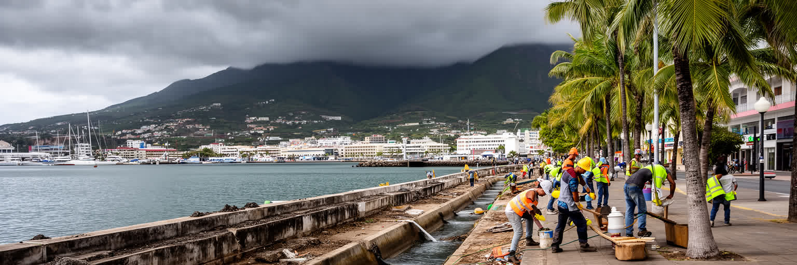
ポートルイスは熱帯の海風を受ける首都ですが、気候の快さだけで語ることはできません。雨季の豪雨、サイクロン、急な斜面から流れる水、低地の排水、港湾施設の高潮リスク、夏の暑さは、都市運営の基本条件です。山に囲まれた小さな流域では、短時間の強い雨が道路や市場、住宅地へ影響しやすいです。気候変動が進むと、排水路、河川管理、斜面の住宅、海面上昇、暑熱対策、停電時の医療や通信がさらに重要になります。水辺の再開発は都市の魅力を高めるが、災害時に守るべき資産も増やします。日陰、街路樹、公共施設、バス停の快適さは、観光客だけでなく高齢者、屋外労働者、市場の商人、学生を守る生活インフラです。港湾、金融、行政が集中するポートルイスでは、一つの災害が国家機能と物流を同時に揺らす可能性があります。古い住宅や非正規の小商いほど復旧費用を負担しにくく、災害は所得差を広げます。暑さ対策も冷房だけに頼れば電気代と停電リスクを増やすため、木陰、通風、公共空間の設計が重要になります。観光客が多い場所ほど避難案内や給水、休める日陰も必要で、災害時の都市サービスは来訪者と住民を同時に守らなければなりません。気候適応は堤防や排水設備だけの問題ではなく、多言語の警報、避難しやすい道、弱い住宅への支援、復旧できる小商いを含みます。湾岸首都の未来は、海と山の美しさを生かしながら、雨と暑さへの備えを日常に組み込めるかにかかっています。
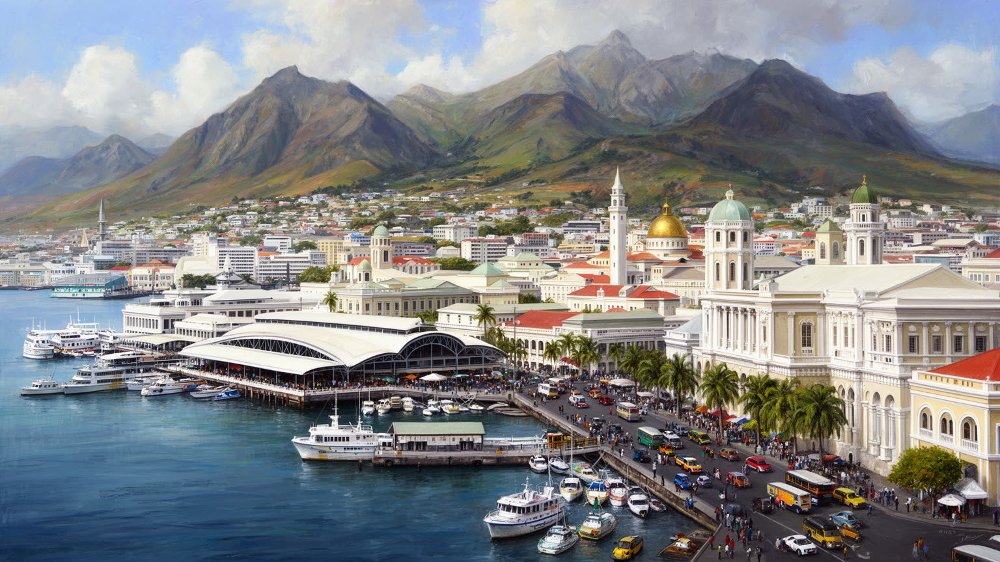
ポートルイスは、人口規模だけで測れば大都市ではありません。しかし、港、金融、国会、移民の記憶、多宗教、中央市場、競馬、観光、水辺再開発が狭い湾岸に集まるため、インド洋の歴史と現代経済を読む密度は高いです。ここでは、植民地時代の海上交通、奴隷制後の年季奉公移民、砂糖経済、独立国家の制度、オフショア金融、リゾート観光、日々の食料価格が互いに切り離せません。美しい多文化の物語は、この街の重要な魅力ですが、それだけでは不十分です。誰が港で働き、誰が金融で利益を得て、誰が市場で生活費を感じ、誰の記憶が世界遺産として残され、誰が洪水や暑さの影響を受けるのかを合わせて見なければなりません。ポートルイスの街路は、島国が外部世界と交渉する場所であると同時に、住民が祈り、食べ、働き、移動する生活空間でもあります。山から港を見下ろすと、国家の入口が驚くほど小さな場所に凝縮されていることが分かります。金融街と市場、遺産と港湾、寺院と裁判所が近すぎるほど近いことは、都市の読み方を単純にしません。小さな首都だからこそ、世界経済の変化も家庭の支出も同じ街路に現れやすいです。観光の明るさと、労働、住宅、排水、物価の不安を同時に見ることで、この港町の現実が立体的になります。その小ささこそが、制度、労働、記憶、宗教、気候リスクを近づけ、ポートルイスを世界地図の中で読む価値のある首都にしています。